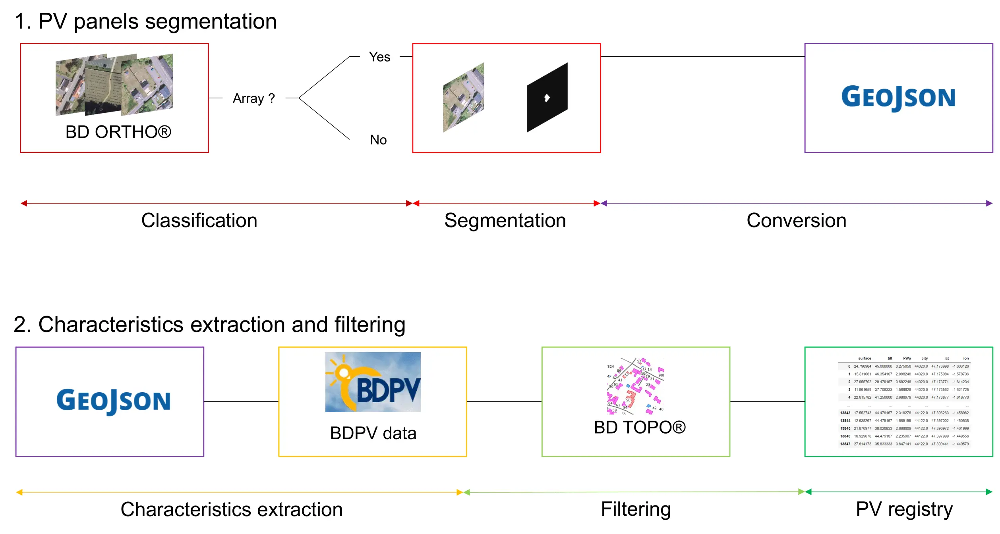
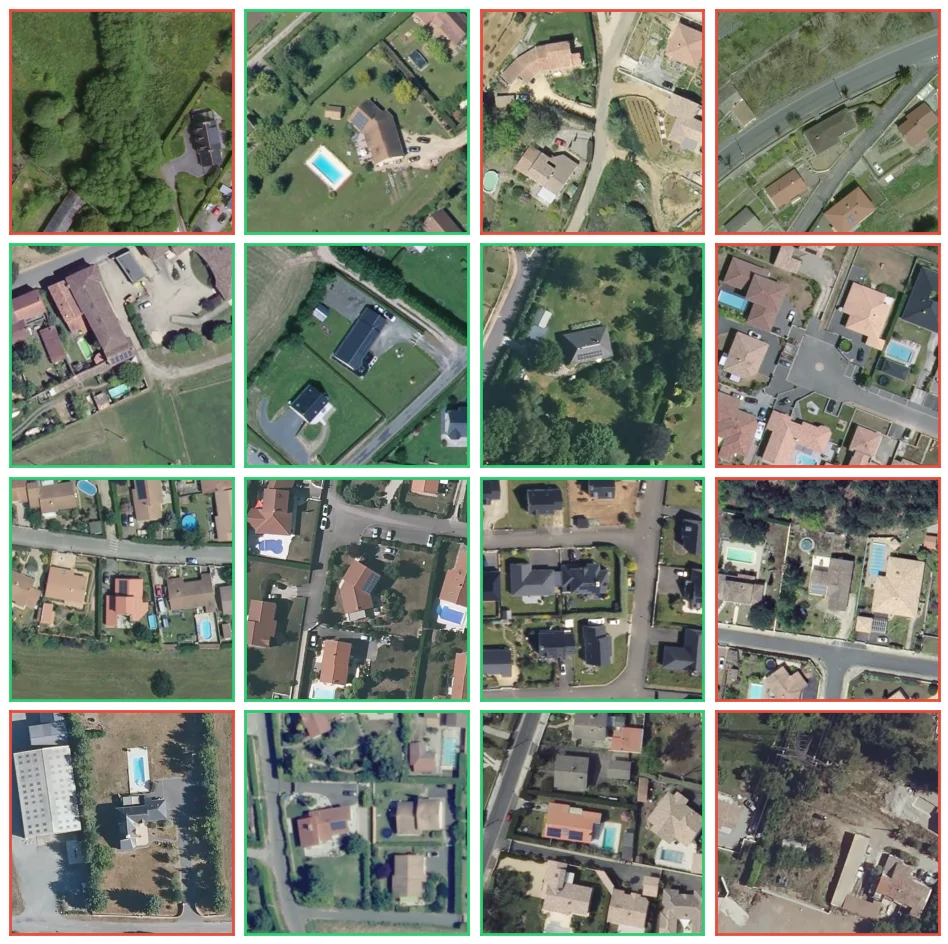
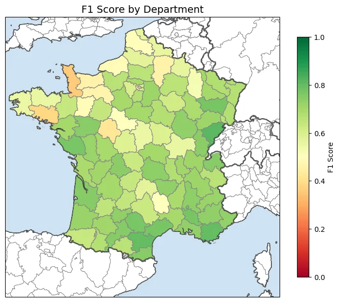
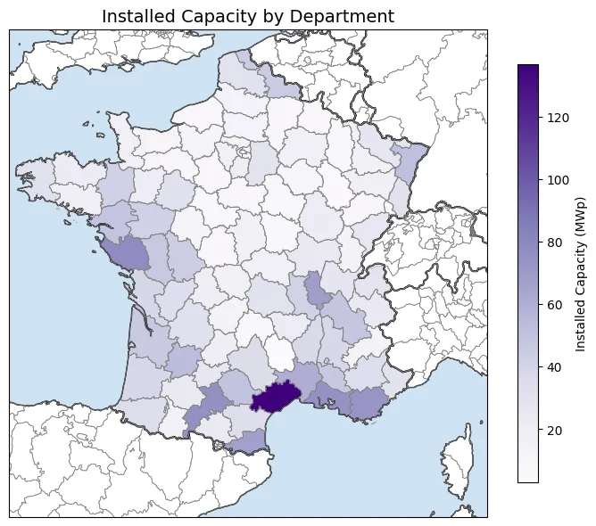
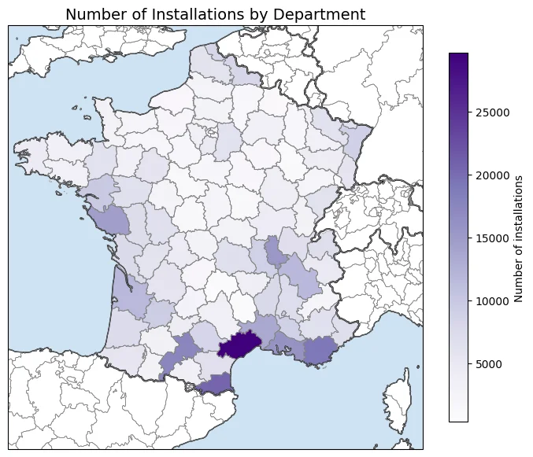

From aerial imagery to a characterized, national-scale rooftop PV registry
DeepPVMapper is a deep learning pipeline, inspired by 3D-PV-Locator (Meyer et al., 2022), that detects rooftop photovoltaic systems from aerial imagery and characterizes them. It proceeds in two stages: polygon extraction, and characteristics extraction.

Aerial tiles are first divided into patches and passed through a classification model (Inception v3) that flags patches likely to contain a PV installation. Positively classified patches are then passed to a segmentation model (DeepLab v3), which extracts precise polygon boundaries for each detected system. This two-step classify-then-segment design keeps the pipeline computationally tractable at national scale, since the costly segmentation step only runs on the small fraction of patches the classifier flags as positive.
The extracted polygons are processed with pypvroof, a package developed for this project and published on PyPI, which estimates each system's surface area, tilt, orientation (azimuth), and installed capacity. Detections are then cross-referenced with BD TOPO®, IGN's national building database, in a cleanup & filtering step that (i) keeps only detections that sit on rooftops and (ii) merges multiple detections belonging to the same roof into a single system. The result is a clean, geolocated PV registry, with one entry per physical installation and its estimated characteristics.
The models are trained on BDAPPV, a dataset of aerial images of rooftop PV installations in France and Belgium, with segmentation masks and installation metadata. Images are provided by two aerial imagery providers — Google and IGN — for a total of 45,733 images, making the dataset suitable for both segmentation/classification benchmarks and distribution shift evaluation across imagery sources. All images are 400×400 px PNGs, with binary PNG segmentation masks at the same resolution; the Google set is a superset of the IGN one, i.e. every IGN installation also has a corresponding Google image. For DeepPVMapper, since deployment runs on IGN's BD ORTHO® imagery, the models are trained specifically on the IGN subset (17,325 images, including 7,685 positive samples).
| Provider | Images | Positives (masks) | Negatives | Note |
|---|---|---|---|---|
| 28,408 | 13,303 | 15,105 | 399 images excluded (no metadata entry) | |
| IGN | 17,325 | 7,685 | 9,640 | – |

The table below, reproduced from Kasmi et al. (2022), benchmarks the classification and segmentation accuracy of our models against comparable works from the literature. The ground sampling distance (GSD) indicates how detailed the imagery is — the lower the GSD, the more detailed the image. PV panels generally cannot be detected on images with a GSD greater than 30 cm/pixel.
| Work | Classification F1-score |
Segmentation IoU |
GSD (cm/pixel) |
|---|---|---|---|
| Mayer et al. | 0.87 | 0.74 | 10 |
| Malof et al. | – | 0.67 | 30 |
| Zech & Ranalli | 0.82 | – | 10 |
| Parhar et al. | 0.97 | 0.86 | 10 |
| Ours | 0.84 | 0.86 | 20 |
The pipeline has been deployed across all of metropolitan France. On our hardware, processing one département takes roughly 10 hours, i.e. an estimated ~1,000 hours (about 42 days) of compute for the full national deployment. This is a rough estimate: it does not account for the overhead caused by crashes, duplicated runs to obtain longitudinal data, duplicated runs to clean or update the data, or the time spent uploading/offloading the aerial imagery.
The pipeline was validated against 34,081 manually checked samples, allowing the computation of precision, recall and F1-score for each département.
To evaluate the recall of the algorithm, we retrieved and cleaned PV plants labels from OpenStreetMap (accounting 8,000 detections) and manually labled the remaining 3,000 systems, depending on our needs. DeepPVMapper was then deployed on these images to estimate the recall. The precision was evaluated by manually labelling the model's own predictions. We labeled a total of 23,014 detections.
The number of validation samples for the precision and recall was decided so that sample size per département is chosen so that the resulting precision and recall estimates carry a ±10% confidence interval around their true value,
The resulting F1 score ranges from 0.28 to 0.81, with a mean score of 0.65 at the national scale. Highest accuracy is achieved in the south of France (average F1 score of 0.75 in the region Provence-Alpes-Côte-d'Azur, followed by 0.70 in Occitanie). The lowest scores are achieved in Normandie (0.49) and in Paris. Most of the variability actually comes from the precision: the number of false positives skyrockets in densely urbanized areas (e.g., Paris), while the low precision in Normandie is caused by farm buildings with metal roofs that the model confuses with PV arrays.
For comparison, Malof et al. (2019) reported a precision of 0.88, a recall of 0.83 and an F1-score of 0.85 over an area of about 12,000 km²; a comparable area in our case — e.g. the Gironde, one of the largest French départements — reaches a precision of 0.87 and a recall of 0.65. More importantly, this validation effort is, to our knowledge, unprecedented in scale for rooftop PV remote sensing: the Connecticut/California validation in Malof et al. (2019) was until now the largest published benchmark for this task.

After curation, the raw output of the pipeline counts 451,883 individual PV systems, totalling 2,305,669.3 kWp of installed capacity. Because the pipeline's precision and recall are imperfect — and vary by département — this raw count is a biased estimate of the true number of installations and the true installed capacity. We therefore use the validation results above to produce corrected (bias-corrected) estimates.
The correction relies on a bootstrap procedure. For each département \(k\), the true positives, false positives and false negatives observed in the manual annotations — \(\text{TP}_k\), \(\text{FP}_k\) and \(\text{FN}_k\) — define a posterior belief about that département's precision and recall, modelled as
\[ p_k \sim \text{Beta}(\text{TP}_k,\ \text{FP}_k), \qquad r_k \sim \text{Beta}(\text{TP}_k,\ \text{FN}_k). \]
The national precision (resp. recall) is then defined as the weighted average of the departmental precisions (resp. recalls), each département being weighted by its estimated installed capacity, and the national F1-score as the harmonic mean of the two. We run 10,000 iterations in which a precision and a recall value are drawn for every département from these Beta distributions, the national weighted averages and F1-score are recomputed, and the installed capacity is corrected as
\[ \text{Capacity}_{real} = \text{Capacity}_{est} \times \frac{p}{r} \]
where \(\text{est\_capacity}\) is the raw, uncorrected installed capacity estimated by the pipeline, and \(p\) and \(r\) denote the (national or departmental) precision and recall. This procedure yields a full distribution — and therefore confidence intervals — for the corrected number of installations and installed capacity. The same bootstrap (10,000 draws) is run independently for each département, producing departmental-level corrected distributions and confidence intervals.
Note that this correction is only valid under an homogeneity assumption: the model must not make systematically different errors across installation size classes. If, say, it under-detects large installations more often than small ones, a uniform precision/recall correction would not fully remove the bias in the corrected capacity.
Applying this procedure at the national level raises the raw count of 451,883 installations to a corrected estimate of 528,199 systems (99% CI: [516,666; 540,434]), and the raw capacity of 2,305,669.3 kWp to a corrected estimate of 2,691,920.5 kWp (99% CI: [2,636,215.5; 2,757,490.0]).


Mayer, J., Rausch, B., Arlt, M.-L., Gust, G., Wang, Z., Neumann, D., & Rajagopal, R. (2022). 3D-PV-Locator: Large-scale detection of rooftop-mounted photovoltaic systems in 3D. Applied Energy, 310, 118469.
Malof, J. M., Li, B., Huang, B., Bradbury, K., & Stretslov, A. (2019). Mapping solar array location, size, and capacity using deep learning and overhead imagery. arXiv preprint arXiv:1902.10895.
Zech, M., & Ranalli, J. (2020). Predicting PV areas in aerial images with deep learning. In 2020 47th IEEE Photovoltaic Specialists Conference (PVSC) (pp. 0767–0774). IEEE.
Parhar, P., Sawasaki, R., Todeschini, A., Reed, C., Vahabi, H., Nusaputra, N., & Vergara, F. (2021). HyperionSolarNet: Solar panel detection from aerial images. In NeurIPS 2021 Workshop on Tackling Climate Change with Machine Learning.
Kasmi, G., Saint-Drenan, Y. M., Trebosc, D., Jolivet, R., Leloux, J., Sarr, B., & Dubus, L. (2023). A crowdsourced dataset of aerial images with annotated solar photovoltaic arrays and installation metadata. Scientific Data, 10, 59.
Trémenbert, Y., Kasmi, G., Dubus, L., Saint-Drenan, Y. M., & Blanc, P. (2023). PyPVRoof: a Python package for extracting the characteristics of rooftop PV installations using remote sensing data. arXiv preprint arXiv:2309.07143.
Kasmi, G., Dubus, L., Blanc, P., & Saint-Drenan, Y. M. (2022). Towards unsupervised assessment with open-source data of the accuracy of deep learning-based distributed PV mapping. arXiv preprint arXiv:2207.07466.